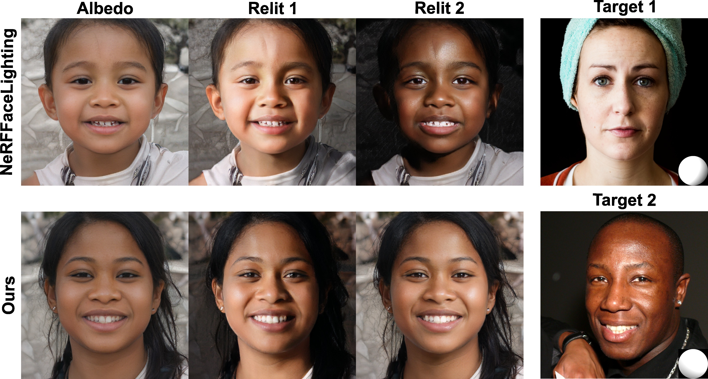
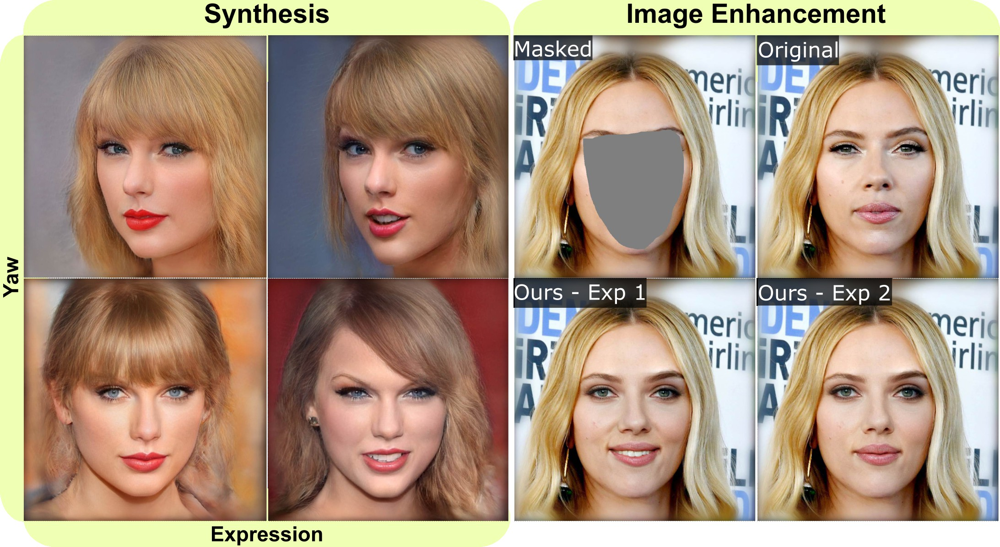
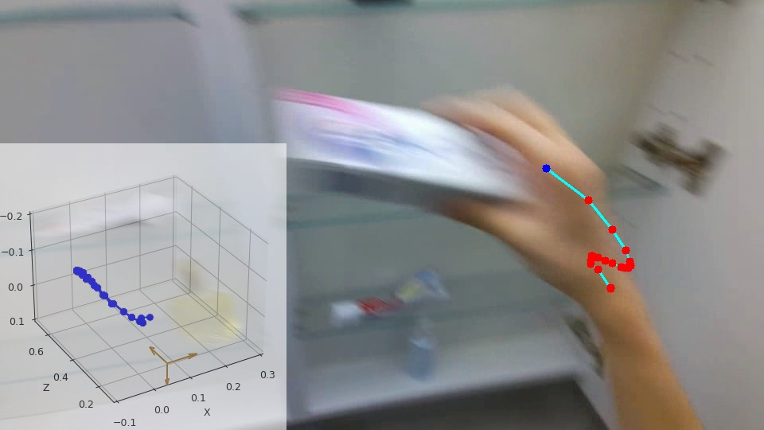
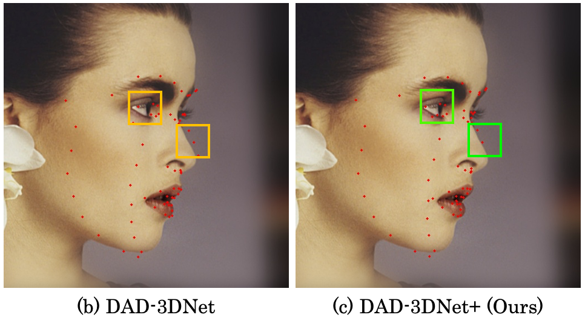
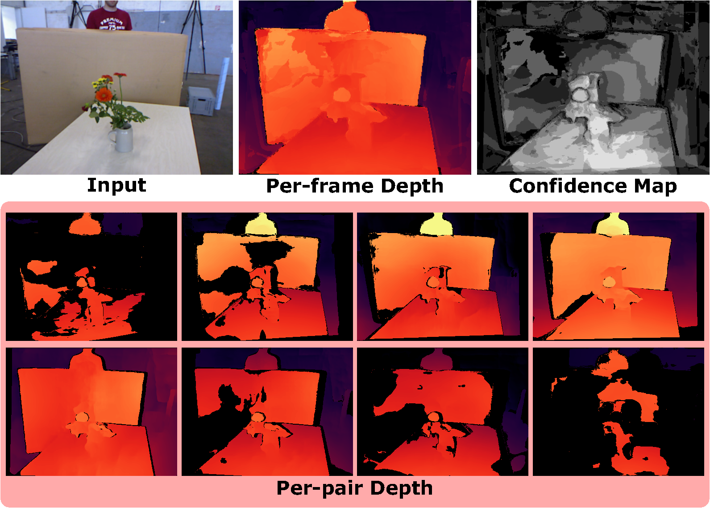

I am a final-year PhD candidate, supervised by Dr. Nima Khademi Kalantari, in Computer Science and Engineering department at Texas A&M University. I am also a member in the Aggie Graphic Group. I have had the privilege of working closely with Dr. Li-Yi Wei and Dr. Paul Debevec during my academic journey. I earned my bachelor's degree in Electronic Information Engineering from Hunan University where I worked with Dr. Shaoyuan Wang.
My current research focuses on leveraging deep learning techniques to solve challenges in computer graphics and computer vision, with a particular emphasis on Facial Image Editing. My goal is to bridge artistic creativity with technical precision, advancing realistic, controllable, and personalized solutions in digital human technologies.
- [10/2024] One first-authored paper accepted to WACV 2025.
- [01/2024] Incoming research intern collaborating with Dr. Paul Debevec at Eyeline Studios - Powered by Netflix.
- [08/2023] One first-authored paper conditionally accepted to SIGGRAPH Asia 2023.
- [07/2023] One co-authored paper accepted to ICCV 2023.
- [02/2023] One first-authored paper accepted to CVPR 2023.
- [12/2022] One first-authored paper accepted to CGF 2023 (Eurographics 2023).
- [05/2021] One co-authored paper accepted to ICCP 2021.
- 
- 
- 
- 
- 
-

-
Rectifying Proposal Failures in Metropolis Light Transport Preprint (HAL 2019)
-
A Renderer Written from the Scratch (BART Animations with High-Frequency Textures) Exercises
-

- 2025 SPRING CSCE 448/748: COMPUTATIONAL PHOTOGRAPHY
- 2024 FALL CSCE 441: COMPUTER GRAPHICS
- 2024 SPRING CSCE 448/748: COMPUTATIONAL PHOTOGRAPHY
- 2023 FALL CSCE 441: COMPUTER GRAPHICS
- 2023 SPRING CSCE 482: SENIOR CAPSTONE DESIGN
- 2022 SPRING CSCE 441: COMPUTER GRAPHICS
- 2021 FALL CSCE 312: COMPUTER ORGANIZATION
-
SIGGRAPH Asia: Reviewer 2024.
-
ECCV: Reviewer 2024.
-
ICLR: Reviewer 2025.
-
WACV: Reviewer 2024/2025.
-
ICPR: Reviewer 2024.
-
CVIU: Reviewer 2024.
-
Travel Grant, Department of Computer Science and Engineering, Texas A&M University, Spring 2025
-
Travel Grant, Department of Computer Science and Engineering, Texas A&M University, Fall 2023
-
Travel Grant, Department of Computer Science and Engineering, Texas A&M University, Spring 2023